The purpose of this review is to provide you an overview of the beer and brewery landscape and provide you a method with identifying white space opportunities based on ABV and IBU
Our insights that we are sharing are based on the ABV and IBU content by State. Our review recommends that the following opportuntities that your company should consider. The opportunity exsit to explore the US Southeast region as a result of the low beer sku count beer per 100,000 capita. In addition, we can customize the style of beer based on our ABV/IBU heat map tool for your marketing team to incorporate in their innovation plan.
#uploads the data into R to start analysis from Github
Breweries <- read_csv("https://raw.githubusercontent.com/sajoseph-smu/Case-Study-1---Budwieser/main/Breweries.csv", show_col_types = FALSE)
summary(Breweries)## Brew_ID Name City State
## Min. : 1.0 Length:558 Length:558 Length:558
## 1st Qu.:140.2 Class :character Class :character Class :character
## Median :279.5 Mode :character Mode :character Mode :character
## Mean :279.5
## 3rd Qu.:418.8
## Max. :558.0Beers <- read_csv("https://raw.githubusercontent.com/sajoseph-smu/Case-Study-1---Budwieser/main/Beers.csv", show_col_types = FALSE)
summary(Beers)## Name Beer_ID ABV IBU Brewery_id
## Length:2410 Min. : 1.0 Min. :0.00100 Min. : 4.00 Min. : 1.0
## Class :character 1st Qu.: 808.2 1st Qu.:0.05000 1st Qu.: 21.00 1st Qu.: 94.0
## Mode :character Median :1453.5 Median :0.05600 Median : 35.00 Median :206.0
## Mean :1431.1 Mean :0.05977 Mean : 42.71 Mean :232.7
## 3rd Qu.:2075.8 3rd Qu.:0.06700 3rd Qu.: 64.00 3rd Qu.:367.0
## Max. :2692.0 Max. :0.12800 Max. :138.00 Max. :558.0
## NA's :62 NA's :1005
## Style Ounces
## Length:2410 Min. : 8.40
## Class :character 1st Qu.:12.00
## Mode :character Median :12.00
## Mean :13.59
## 3rd Qu.:16.00
## Max. :32.00
## #This code will identify the number of breweries for each state
#How many Breweries are in each state?
SummaryBrewery <- Breweries %>% count(State, sort = TRUE)
names(SummaryBrewery)[2] <- "Brewery_Count"
#Summary of Breweries
SummaryBrewery## # A tibble: 51 x 2
## State Brewery_Count
## <chr> <int>
## 1 CO 47
## 2 CA 39
## 3 MI 32
## 4 OR 29
## 5 TX 28
## 6 PA 25
## 7 MA 23
## 8 WA 23
## 9 IN 22
## 10 WI 20
## # ... with 41 more rows# Top 25 States with Most Breweries
top_n(SummaryBrewery,25,Brewery_Count) %>% ggplot(mapping = aes(x = reorder(State,-Brewery_Count), y = Brewery_Count, fill = State)) + geom_bar(stat = 'identity') + ggtitle("Top 25 States by Brewery Count") + xlab("States") + ylab("Brewery Count") +geom_text(aes(label = format(Brewery_Count,big.mark =',')), position = position_dodge(width = .9), vjust = -.25)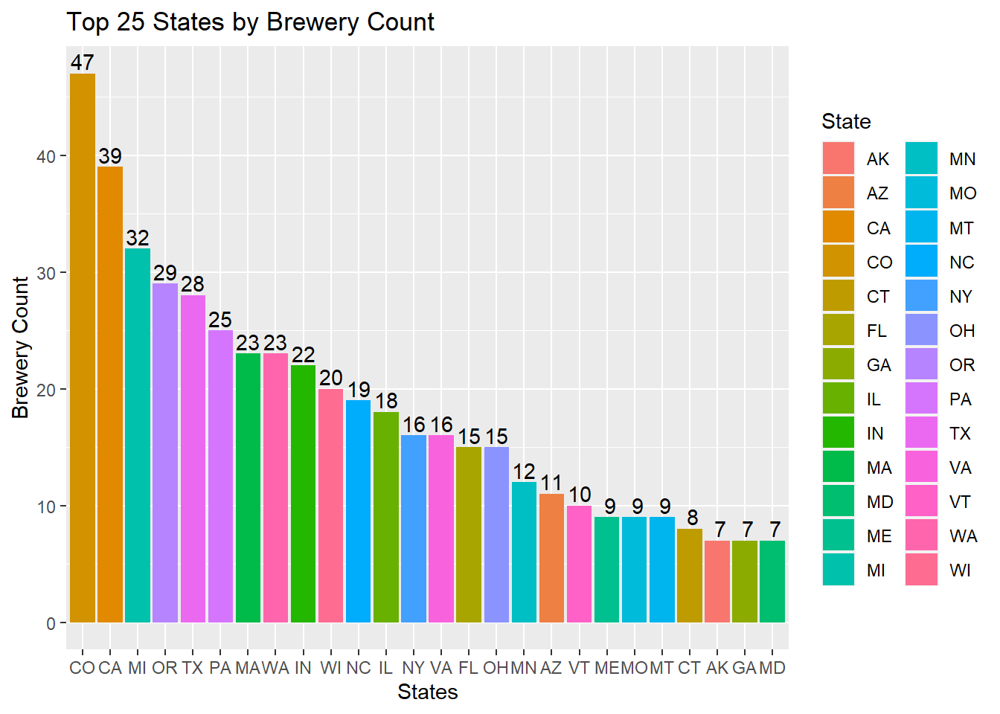
# Bottom 25 States with Most Breweries
top_n(SummaryBrewery,25,-Brewery_Count) %>% ggplot(mapping = aes(x = reorder(State,Brewery_Count), y = Brewery_Count, fill = State)) + geom_bar(stat = 'identity') + ggtitle("Bottom 25 States by Brewery Count") + xlab("States") + ylab("Brewery Count") +geom_text(aes(label = format(Brewery_Count,big.mark =',')), position = position_dodge(width = .9), vjust = -.25)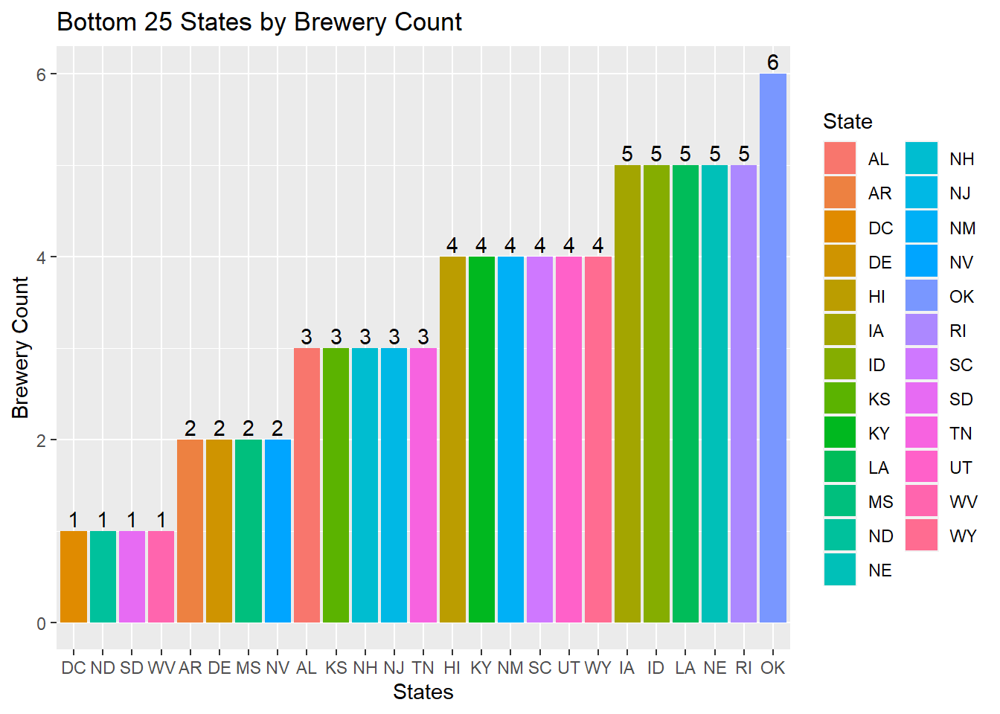
#This code will merge the Data with assigning each beer with the brewery and location
#Merge Data
#outer join (keep all observations from both dataframes)
names(Beers)[5] <- "Brew_ID"
names(Breweries)[2] <- "Brewery_Name"
bbdf <- merge(Beers,Breweries, by = "Brew_ID")
#Head
bbdf %>% head(6)## Brew_ID Name Beer_ID ABV IBU Style Ounces Brewery_Name
## 1 1 Get Together 2692 0.045 50 American IPA 16 NorthGate Brewing
## 2 1 Maggie's Leap 2691 0.049 26 Milk / Sweet Stout 16 NorthGate Brewing
## 3 1 Wall's End 2690 0.048 19 English Brown Ale 16 NorthGate Brewing
## 4 1 Pumpion 2689 0.060 38 Pumpkin Ale 16 NorthGate Brewing
## 5 1 Stronghold 2688 0.060 25 American Porter 16 NorthGate Brewing
## 6 1 Parapet ESB 2687 0.056 47 Extra Special / Strong Bitter (ESB) 16 NorthGate Brewing
## City State
## 1 Minneapolis MN
## 2 Minneapolis MN
## 3 Minneapolis MN
## 4 Minneapolis MN
## 5 Minneapolis MN
## 6 Minneapolis MN#tail
bbdf %>% tail(6)## Brew_ID Name Beer_ID ABV IBU Style Ounces
## 2405 556 Pilsner Ukiah 98 0.055 NA German Pilsener 12
## 2406 557 Heinnieweisse Weissebier 52 0.049 NA Hefeweizen 12
## 2407 557 Snapperhead IPA 51 0.068 NA American IPA 12
## 2408 557 Moo Thunder Stout 50 0.049 NA Milk / Sweet Stout 12
## 2409 557 Porkslap Pale Ale 49 0.043 NA American Pale Ale (APA) 12
## 2410 558 Urban Wilderness Pale Ale 30 0.049 NA English Pale Ale 12
## Brewery_Name City State
## 2405 Ukiah Brewing Company Ukiah CA
## 2406 Butternuts Beer and Ale Garrattsville NY
## 2407 Butternuts Beer and Ale Garrattsville NY
## 2408 Butternuts Beer and Ale Garrattsville NY
## 2409 Butternuts Beer and Ale Garrattsville NY
## 2410 Sleeping Lady Brewing Company Anchorage AK#Cleanse data
#We chose to omit the NA records as a method to clean the data
bbdf_clean = na.omit(bbdf)#This code will create a table of Medians for ABV and IBU for each state and graphically display a bar chart
# created a clean table with stats for ABV and IBU
bbdf_clean_stats = bbdf_clean %>% group_by(State) %>% summarise(Mean_ABV=mean(ABV), Max_ABV=max(ABV), Min_ABV=min(ABV), Median_ABV=median(ABV), Std_ABV=sd(ABV),Mean_IBU=mean(IBU), Max_IBU=max(IBU), Min_IBU=min(IBU), Median_IBU=median(IBU), Std_IBU=sd(IBU))
# Clean table with Medians for ABV and IBU
bbdf_clean_Medians = bbdf_clean_stats %>% select(State, Median_ABV, Median_IBU)
bbdf_clean_Medians## # A tibble: 50 x 3
## State Median_ABV Median_IBU
## <chr> <dbl> <dbl>
## 1 AK 0.057 46
## 2 AL 0.06 43
## 3 AR 0.04 39
## 4 AZ 0.055 20
## 5 CA 0.058 42
## 6 CO 0.065 40
## 7 CT 0.061 29
## 8 DC 0.059 47.5
## 9 DE 0.055 52
## 10 FL 0.062 55
## # ... with 40 more rows# Top 25 States by Median ABV
top_n(bbdf_clean_Medians,25,Median_ABV) %>% ggplot(mapping = aes(x = reorder(State,Median_ABV), y = Median_ABV, fill = State)) + geom_bar(stat = 'identity') + ggtitle("Top 25 States by Median ABV") + xlab("States") + ylab("ABV") +ylim(0,.08) +geom_text(aes(label = format(Median_ABV,big.mark =',')), position = position_dodge(width = .6), hjust = -.25) + coord_flip()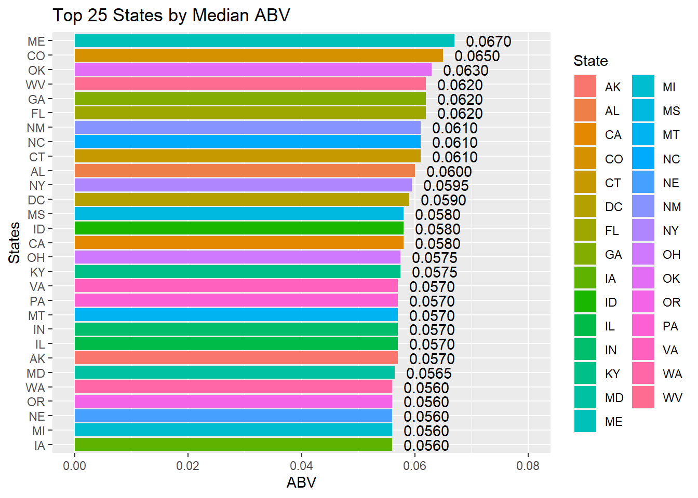
# Bottom 25 States by Median ABV
top_n(bbdf_clean_Medians,25,-Median_ABV) %>% ggplot(mapping = aes(x = reorder(State,-Median_ABV), y = Median_ABV, fill = State)) + geom_bar(stat = 'identity') + ggtitle("Bottom 25 States by Median ABV") + xlab("States") + ylab("ABV") +ylim(0,.08) +geom_text(aes(label = format(Median_ABV,big.mark =',')), position = position_dodge(width = .6), hjust = -.25) + coord_flip()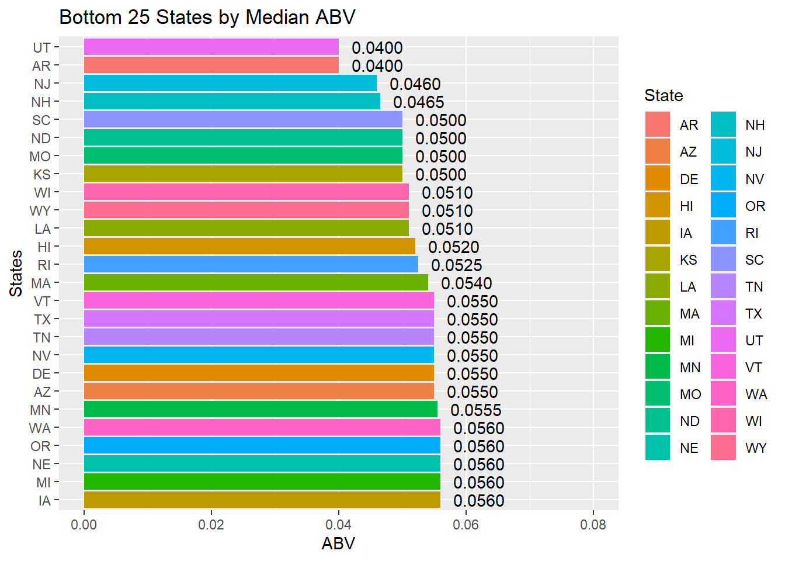
# Top 25 States by Median IBU
top_n(bbdf_clean_Medians,25,Median_IBU) %>% ggplot(mapping = aes(x = reorder(State,Median_IBU), y = Median_IBU, fill = State)) + geom_bar(stat = 'identity') + ggtitle("Top 25 States by Median IBU") + xlab("States") + ylab("IBU") +ylim(0,70) +geom_text(aes(label = format(Median_IBU,big.mark =',')), position = position_dodge(width = .6), hjust = -.25) + coord_flip()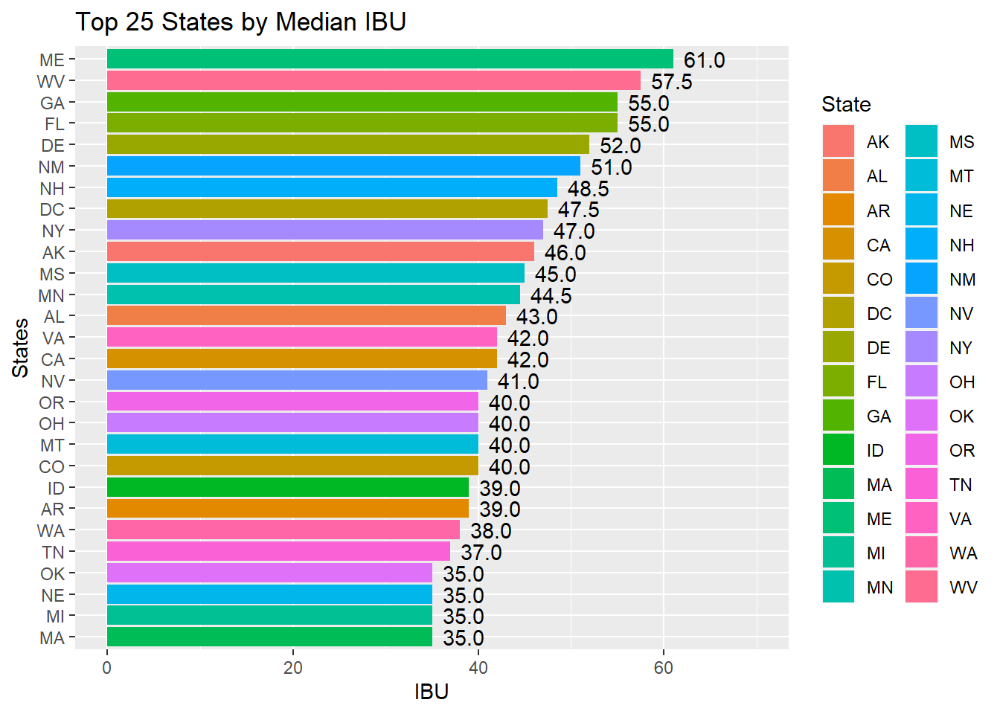
# Bottom 25 States by Median IBU
top_n(bbdf_clean_Medians,25,-Median_IBU) %>% ggplot(mapping = aes(x = reorder(State,-Median_IBU), y = Median_IBU, fill = State)) + geom_bar(stat = 'identity') + ggtitle("Bottom 25 States by Median IBU") + xlab("States") + ylab("IBU") +ylim(0,70) +geom_text(aes(label = format(Median_IBU,big.mark =',')), position = position_dodge(width = .6), hjust = -.25) + coord_flip()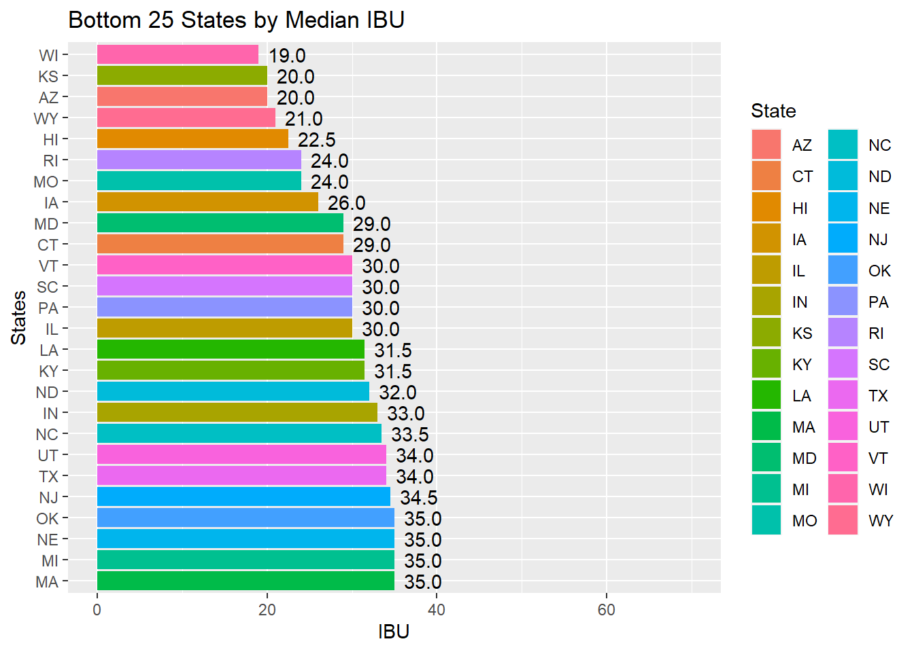
#This code will identify which State has the highest ABV and IBU beers.
# State with the max ABV
bbdf_clean %>% filter(ABV == max(ABV))## Brew_ID Name Beer_ID ABV IBU Style Ounces Brewery_Name City
## 1 2 London Balling 2685 0.125 80 English Barleywine 16 Against the Grain Brewery Louisville
## State
## 1 KY#State with the max IBU
bbdf_clean %>% filter(IBU == max(IBU))## Brew_ID Name Beer_ID ABV IBU Style Ounces
## 1 375 Bitter Bitch Imperial IPA 980 0.082 138 American Double / Imperial IPA 12
## Brewery_Name City State
## 1 Astoria Brewing Company Astoria OR# Scatter Plot code to show the relationship between ABV and IBU
bbdf_clean %>% ggplot(mapping = aes(x = ABV, y = IBU)) + geom_point(mapping = aes(x = ABV, y = IBU, color = State), position = "jitter") + geom_smooth(method='lm', formula= y~x) + ggtitle("ABV vs IBU") + xlab("ABV") + ylab("IBU") 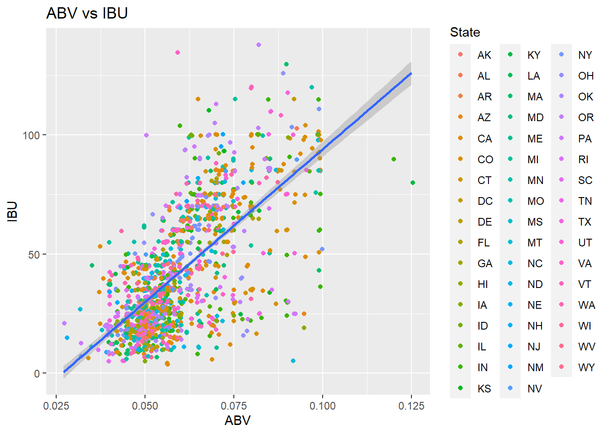
# Code to building the Ales and IPA data frame and creating a flag for OtherAles and IPA
bbdf_Ales = bbdf_clean %>% filter(str_detect(Style,"(IPA| Ale)"))
bbdf_Ales = bbdf_Ales %>% mutate(IPAFlag = case_when(str_detect(bbdf_Ales$Style,"IPA") == TRUE ~ "IPA", TRUE ~ "Other Ales" ))
bbdf_Ales$IPAFlag = as.factor(bbdf_Ales$IPAFlag)
# Code to find the best K that achieves at least 80% Accruacy
set.seed(1)
iterations = 100
numks = 15
splitPerc = .70
masterAcc = matrix(nrow = iterations, ncol = numks)
for(j in 1:iterations)
{
trainIndices = sample(1:dim(bbdf_Ales)[1],round(splitPerc * dim(bbdf_Ales)[1]))
train = bbdf_Ales[trainIndices,]
test = bbdf_Ales[-trainIndices,]
for(i in 1:numks)
{
classifications = knn(train[,c(4,5)],test[,c(4,5)],train$IPAFlag, prob = TRUE, k = i)
CM = confusionMatrix(table(classifications,test$IPAFlag))
masterAcc[j,i] = CM$overall[1]
}
}
MeanAcc = colMeans(masterAcc)
# find out the best K and accuracy and plot it
which.max(MeanAcc)## [1] 5max(MeanAcc)## [1] 0.8567845plot(seq(1,numks,1),MeanAcc, type = "l")
abline(v = 5, col = 'green')
abline(h = .8589, col = 'green')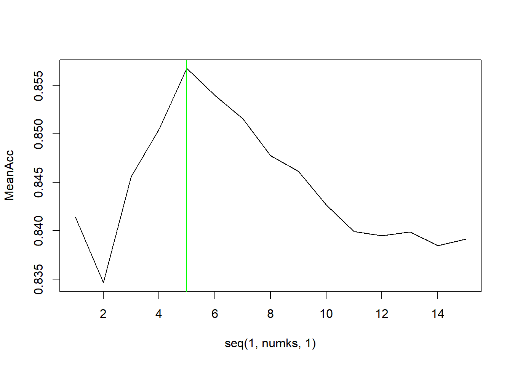
# run the knn with the best K
# K = 5
classifications = knn(train[,c(4,5)],test[,c(4,5)],train$IPAFlag, prob = TRUE, k = 5)
CM = confusionMatrix(table(classifications,test$IPAFlag))
CM## Confusion Matrix and Statistics
##
##
## classifications IPA Other Ales
## IPA 92 13
## Other Ales 29 149
##
## Accuracy : 0.8516
## 95% CI : (0.8047, 0.8909)
## No Information Rate : 0.5724
## P-Value [Acc > NIR] : < 2e-16
##
## Kappa : 0.6917
##
## Mcnemar's Test P-Value : 0.02064
##
## Sensitivity : 0.7603
## Specificity : 0.9198
## Pos Pred Value : 0.8762
## Neg Pred Value : 0.8371
## Prevalence : 0.4276
## Detection Rate : 0.3251
## Detection Prevalence : 0.3710
## Balanced Accuracy : 0.8400
##
## 'Positive' Class : IPA
## # creating a map plot of the counts of IPA's and Other Ales
library(ggplot2)
library(maps)
library(dplyr)
library(mapproj)
#install.packages("tidycensus")
library(tidycensus)
## Run the below code if your are changing the census key
##census_api_key("60e6bde9f7a79e136e60fbbb59ce47e85938deb5", install = TRUE)
##readRenviron("~/.Renviron")
lookup = data.frame(abb = state.abb, State = state.name)
bbdf_map = merge(bbdf, lookup, by.x = "State", by.y = "abb")
bbdf_map## State Brew_ID Name Beer_ID ABV IBU
## 1 AK 494 Polar Pale Ale 920 0.052 17
## 2 AK 103 King Street IPA 1667 0.060 70
## 3 AK 454 Single Engine Red 929 0.058 46
## 4 AK 459 Skilak Scottish Ale (2011) 348 0.058 NA
## 5 AK 103 King Street Pilsner 1706 0.055 NA
## 6 AK 224 Pleasure Town IPA 1814 0.063 61
## 7 AK 224 Sockeye Red IPA 434 0.057 70
## 8 AK 271 Alaskan Amber 1920 0.053 18
## 9 AK 224 Snowshoe White Ale 587 0.048 12
## 10 AK 494 Fairweather IPA 648 0.061 64
## 11 AK 494 Chugach Session Ale 919 0.048 NA
## 12 AK 103 Amber Ale 2436 0.051 NA
## 13 AK 271 Freeride APA 1921 0.053 40
## 14 AK 224 Kodiak Brown Ale 586 0.050 24
## 15 AK 224 Pleasure Town 2093 0.063 61
## 16 AK 459 Sunken Island IPA 349 0.068 NA
## 17 AK 558 Urban Wilderness Pale Ale 30 0.049 NA
## 18 AK 454 Chuli Stout 1213 0.059 55
## 19 AK 459 Skilak Scottish Ale 1193 0.058 NA
## 20 AK 494 Northern Lights Amber Ale 921 0.050 15
## 21 AK 459 Peninsula Brewers Reserve (PBR) 1187 0.050 15
## 22 AK 103 King Street Hefeweizen 1666 0.057 10
## 23 AK 454 Twister Creek India Pale Ale 947 0.065 71
## 24 AK 103 King Street Blonde Ale 1665 0.049 NA
## 25 AK 454 Mother Ale 1159 0.056 46
## 26 AL 413 Monkeynaut IPA 637 0.072 70
## 27 AL 287 Naked Pig Pale Ale 1875 0.060 43
## 28 AL 413 Lily Flagg Milk Stout 925 0.050 30
## 29 AL 287 Truck Stop Honey Brown Ale 1876 0.060 NA
## 30 AL 479 Good People American Brown Ale 308 0.058 36
## 31 AL 479 Good People IPA 309 0.060 64
## 32 AL 479 Coffee Oatmeal Stout 311 0.060 54
## 33 AL 479 Good People Pale Ale 1000 0.056 36
## 34 AL 413 Sand Island Lighthouse 1410 0.051 25
## 35 AL 479 Snake Handler Double IPA 312 0.093 103
## 36 AR 260 Ozark American Pale Ale 1961 0.040 39
## 37 AR 140 Core ESB 1336 0.061 NA
## 38 AR 140 Arkansas Red 1650 0.052 NA
## 39 AR 140 Core Oatmeal Stout 1337 0.057 NA
## 40 AR 140 Behemoth 2351 0.050 NA
## 41 AZ 31 Mr. Pineapple 777 0.050 20
## 42 AZ 31 Devil’s Ale 850 0.055 45
## 43 AZ 31 Epicenter Amber Ale (2010) 124 0.055 20
## 44 AZ 31 Sex Panther (2014) 852 0.069 20
## 45 AZ 31 Rail Slide Imperial Spiced Ale 839 0.081 NA
## 46 AZ 158 Camelback 2312 0.061 60
## 47 AZ 549 Ponderosa IPA 335 NA NA
## 48 AZ 31 Sex Panther 2599 0.069 20
## 49 AZ 31 Hop Shock IPA (2010) 317 0.070 85
## 50 AZ 31 Hop Shock IPA 1071 0.070 85
## 51 AZ 550 Wapiti Amber Ale 327 0.050 NA
## 52 AZ 31 SanTan HefeWeizen 1072 0.050 15
## 53 AZ 31 Epicenter Amber Ale 1073 0.055 20
## 54 AZ 31 Supermonk I.P.A. 1299 0.065 NA
## 55 AZ 252 Barrio Blanco 2005 0.060 60
## 56 AZ 161 Sunbru Kölsch 178 0.052 NA
## 57 AZ 252 Barrio Tucson Blonde 1343 0.045 NA
## 58 AZ 161 Kilt Lifter Scottish-Style Ale 1635 0.060 21
## 59 AZ 508 Dry Heat Hefeweizen (2006) 131 0.055 NA
## 60 AZ 159 Knotty Pine 2311 0.054 NA
## 61 AZ 537 Grand Canyon American Pilsner 476 0.052 NA
## 62 AZ 232 Noche Dulce 2062 0.071 16
## 63 AZ 161 Kilt Lifter Scottish-Style Ale (2009) 179 0.060 21
## 64 AZ 537 White Water Wheat 477 0.050 NA
## 65 AZ 31 American Idiot Ale (2012) 764 0.055 45
## 66 AZ 159 Lumberyard IPA 355 0.061 NA
## 67 AZ 31 I.W.A. (2011) 1329 0.060 NA
## 68 AZ 161 Four Peaks Peach Ale 1585 0.042 9
## 69 AZ 31 SanTan HefeWeizen (2010) 286 0.050 15
## 70 AZ 161 Sunbru Kölsch 2309 0.052 17
## 71 AZ 508 Full Moon Belgian White Ale (2007) 132 0.085 NA
## 72 AZ 31 Count Hopula (Vault Series) 2063 0.091 99
## 73 AZ 31 Devil’s Ale (2010) 285 0.055 45
## 74 AZ 161 Hop Knot IPA 358 0.067 47
## 75 AZ 233 Big Blue Van 2061 0.058 NA
## 76 AZ 31 SunSpot Golden Ale 1934 0.050 15
## 77 AZ 31 Winter Warmer (Vault Series) 2073 0.095 25
## 78 AZ 31 Oktoberfest 1995 0.055 NA
## 79 AZ 159 Lumberyard Pilsner 1153 0.053 20
## 80 AZ 508 Desert Magic IPA 625 0.072 NA
## 81 AZ 159 Lumberyard Red Ale 125 0.058 NA
## 82 AZ 537 Grand Canyon Sunset Amber Ale 143 0.054 NA
## 83 AZ 549 Liquid Amber Ale 64 NA NA
## 84 AZ 161 Pumpkin Porter 1616 0.051 NA
## 85 AZ 508 Up River Light 326 0.042 NA
## 86 AZ 508 Full Moon Belgian White Ale 768 0.085 NA
## 87 AZ 537 Black Iron India Pale Ale 142 NA NA
## 88 CA 515 Rich Man's IIPA 718 0.087 NA
## 89 CA 289 Saint Archer IPA 1867 0.068 66
## 90 CA 535 High Country Pilsner (Current) 511 0.042 NA
## Style Ounces Brewery_Name City
## 1 American Pale Ale (APA) 12 Broken Tooth Brewing Company Anchorage
## 2 American IPA 12 King Street Brewing Company Anchorage
## 3 Irish Red Ale 12 Denali Brewing Company Talkeetna
## 4 Scottish Ale 12 Kenai River Brewing Company Soldotna
## 5 Czech Pilsener 12 King Street Brewing Company Anchorage
## 6 American IPA 12 Midnight Sun Brewing Company Anchorage
## 7 American IPA 12 Midnight Sun Brewing Company Anchorage
## 8 Altbier 12 Alaskan Brewing Company Juneau
## 9 Witbier 12 Midnight Sun Brewing Company Anchorage
## 10 American IPA 12 Broken Tooth Brewing Company Anchorage
## 11 Cream Ale 12 Broken Tooth Brewing Company Anchorage
## 12 American Amber / Red Ale 12 King Street Brewing Company Anchorage
## 13 American Pale Ale (APA) 12 Alaskan Brewing Company Juneau
## 14 American Brown Ale 12 Midnight Sun Brewing Company Anchorage
## 15 American IPA 12 Midnight Sun Brewing Company Anchorage
## 16 American IPA 12 Kenai River Brewing Company Soldotna
## 17 English Pale Ale 12 Sleeping Lady Brewing Company Anchorage
## 18 Irish Dry Stout 12 Denali Brewing Company Talkeetna
## 19 Scottish Ale 12 Kenai River Brewing Company Soldotna
## 20 American Amber / Red Ale 12 Broken Tooth Brewing Company Anchorage
## 21 American Blonde Ale 12 Kenai River Brewing Company Soldotna
## 22 Hefeweizen 12 King Street Brewing Company Anchorage
## 23 American IPA 12 Denali Brewing Company Talkeetna
## 24 American Blonde Ale 12 King Street Brewing Company Anchorage
## 25 American Blonde Ale 12 Denali Brewing Company Talkeetna
## 26 American IPA 12 Straight to Ale Huntsville
## 27 American Pale Ale (APA) 12 Back Forty Beer Company Gadsden
## 28 Milk / Sweet Stout 12 Straight to Ale Huntsville
## 29 English Brown Ale 12 Back Forty Beer Company Gadsden
## 30 American Brown Ale 12 Good People Brewing Company Birmingham
## 31 American IPA 12 Good People Brewing Company Birmingham
## 32 Oatmeal Stout 12 Good People Brewing Company Birmingham
## 33 American Pale Ale (APA) 12 Good People Brewing Company Birmingham
## 34 Kölsch 12 Straight to Ale Huntsville
## 35 American Double / Imperial IPA 12 Good People Brewing Company Birmingham
## 36 American Pale Ale (APA) 12 Ozark Beer Company Rogers
## 37 Extra Special / Strong Bitter (ESB) 12 Core Brewing & Distilling Company Springdale
## 38 American Amber / Red Ale 12 Core Brewing & Distilling Company Springdale
## 39 Oatmeal Stout 12 Core Brewing & Distilling Company Springdale
## 40 American Pilsner 12 Core Brewing & Distilling Company Springdale
## 41 Fruit / Vegetable Beer 12 SanTan Brewing Company Chandler
## 42 American Pale Ale (APA) 12 SanTan Brewing Company Chandler
## 43 American Amber / Red Ale 12 SanTan Brewing Company Chandler
## 44 American Porter 12 SanTan Brewing Company Chandler
## 45 Herbed / Spiced Beer 12 SanTan Brewing Company Chandler
## 46 American IPA 12 Phoenix Ale Brewery Phoenix
## 47 American IPA 12 Prescott Brewing Company Prescott
## 48 American Porter 12 SanTan Brewing Company Chandler
## 49 American IPA 12 SanTan Brewing Company Chandler
## 50 American IPA 12 SanTan Brewing Company Chandler
## 51 American Amber / Red Ale 12 Mogollon Brewing Company Flagstaff
## 52 Hefeweizen 12 SanTan Brewing Company Chandler
## 53 American Amber / Red Ale 12 SanTan Brewing Company Chandler
## 54 Belgian IPA 12 SanTan Brewing Company Chandler
## 55 American IPA 12 Barrio Brewing Company Tucson
## 56 Kölsch 12 Four Peaks Brewing Company Tempe
## 57 American Blonde Ale 12 Barrio Brewing Company Tucson
## 58 <NA> 12 Four Peaks Brewing Company Tempe
## 59 Hefeweizen 12 Mudshark Brewing Company Lake Havasu City
## 60 American Pale Ale (APA) 12 Lumberyard Brewing Company Flagstaff
## 61 American Pilsner 12 Grand Canyon Brewing Company Williams
## 62 American Porter 16 Borderlands Brewing Company Tucson
## 63 Scottish Ale 12 Four Peaks Brewing Company Tempe
## 64 American Pale Wheat Ale 12 Grand Canyon Brewing Company Williams
## 65 American Pale Ale (APA) 12 SanTan Brewing Company Chandler
## 66 American IPA 12 Lumberyard Brewing Company Flagstaff
## 67 American Pale Wheat Ale 12 SanTan Brewing Company Chandler
## 68 Fruit / Vegetable Beer 12 Four Peaks Brewing Company Tempe
## 69 Hefeweizen 12 SanTan Brewing Company Chandler
## 70 Kölsch 12 Four Peaks Brewing Company Tempe
## 71 Witbier 12 Mudshark Brewing Company Lake Havasu City
## 72 American Double / Imperial IPA 16 SanTan Brewing Company Chandler
## 73 American Pale Ale (APA) 12 SanTan Brewing Company Chandler
## 74 American IPA 12 Four Peaks Brewing Company Tempe
## 75 Fruit / Vegetable Beer 16 College Street Brewhouse and Pub Lake Havasu City
## 76 American Blonde Ale 12 SanTan Brewing Company Chandler
## 77 Winter Warmer 16 SanTan Brewing Company Chandler
## 78 Märzen / Oktoberfest 12 SanTan Brewing Company Chandler
## 79 American Pilsner 12 Lumberyard Brewing Company Flagstaff
## 80 American IPA 12 Mudshark Brewing Company Lake Havasu City
## 81 American Amber / Red Ale 12 Lumberyard Brewing Company Flagstaff
## 82 American Amber / Red Ale 12 Grand Canyon Brewing Company Williams
## 83 American Amber / Red Ale 12 Prescott Brewing Company Prescott
## 84 American Porter 12 Four Peaks Brewing Company Tempe
## 85 Light Lager 12 Mudshark Brewing Company Lake Havasu City
## 86 Witbier 12 Mudshark Brewing Company Lake Havasu City
## 87 American IPA 12 Grand Canyon Brewing Company Williams
## 88 American Double / Imperial IPA 16 Monkey Paw Pub & Brewery San Diego
## 89 American IPA 12 Saint Archer Brewery San Diego
## 90 German Pilsener 12 Mammoth Brewing Company Mammoth Lakes
## State.y
## 1 Alaska
## 2 Alaska
## 3 Alaska
## 4 Alaska
## 5 Alaska
## 6 Alaska
## 7 Alaska
## 8 Alaska
## 9 Alaska
## 10 Alaska
## 11 Alaska
## 12 Alaska
## 13 Alaska
## 14 Alaska
## 15 Alaska
## 16 Alaska
## 17 Alaska
## 18 Alaska
## 19 Alaska
## 20 Alaska
## 21 Alaska
## 22 Alaska
## 23 Alaska
## 24 Alaska
## 25 Alaska
## 26 Alabama
## 27 Alabama
## 28 Alabama
## 29 Alabama
## 30 Alabama
## 31 Alabama
## 32 Alabama
## 33 Alabama
## 34 Alabama
## 35 Alabama
## 36 Arkansas
## 37 Arkansas
## 38 Arkansas
## 39 Arkansas
## 40 Arkansas
## 41 Arizona
## 42 Arizona
## 43 Arizona
## 44 Arizona
## 45 Arizona
## 46 Arizona
## 47 Arizona
## 48 Arizona
## 49 Arizona
## 50 Arizona
## 51 Arizona
## 52 Arizona
## 53 Arizona
## 54 Arizona
## 55 Arizona
## 56 Arizona
## 57 Arizona
## 58 Arizona
## 59 Arizona
## 60 Arizona
## 61 Arizona
## 62 Arizona
## 63 Arizona
## 64 Arizona
## 65 Arizona
## 66 Arizona
## 67 Arizona
## 68 Arizona
## 69 Arizona
## 70 Arizona
## 71 Arizona
## 72 Arizona
## 73 Arizona
## 74 Arizona
## 75 Arizona
## 76 Arizona
## 77 Arizona
## 78 Arizona
## 79 Arizona
## 80 Arizona
## 81 Arizona
## 82 Arizona
## 83 Arizona
## 84 Arizona
## 85 Arizona
## 86 Arizona
## 87 Arizona
## 88 California
## 89 California
## 90 California
## [ reached 'max' / getOption("max.print") -- omitted 2312 rows ]colnames(bbdf_map)[1] = "StateCode"
colnames(bbdf_map)[11] = "State"
bbdf_map$region <- tolower(bbdf_map$State)
bbdf_map_summary = bbdf_map %>% group_by(region) %>% summarize(cnt = n(), meanABV = mean(ABV, na.rm = TRUE), meanIBU = mean(IBU, na.rm = TRUE))
# Getting population data from the ACS for 5 year ( latest year is 2019)
v19 <- load_variables(2019, "acs5")
pop2019 = get_acs(geography = "state", variable = "B01003_001", year = 2019)## Getting data from the 2015-2019 5-year ACS# creating a region and a per 100K count for population estimate
pop2019$region = tolower(pop2019$NAME)
pop2019$per100k = pop2019$estimate / 100000
bbdf_map_summary2 = bbdf_map_summary %>% merge(pop2019[, c("region","per100k")], by="region", all.x=T)
bbdf_map_summary2$perCapita = bbdf_map_summary2$cnt / bbdf_map_summary2$per100k
states <- map_data("state")
map.df <- bbdf_map_summary2 %>% merge(states, by="region", all.x=T)
map.df <- map.df[order(map.df$order),]
# below is the code for creating the Mean ABV by State
# ------
ggplot(map.df, aes(x=long,y=lat,group=group))+
geom_polygon(aes(fill= meanABV))+
geom_path()+
scale_fill_gradientn(colours=rev(heat.colors(10)),na.value="grey90")+ggtitle("Mean ABV by State")+
coord_map()## Warning: Removed 2 row(s) containing missing values (geom_path).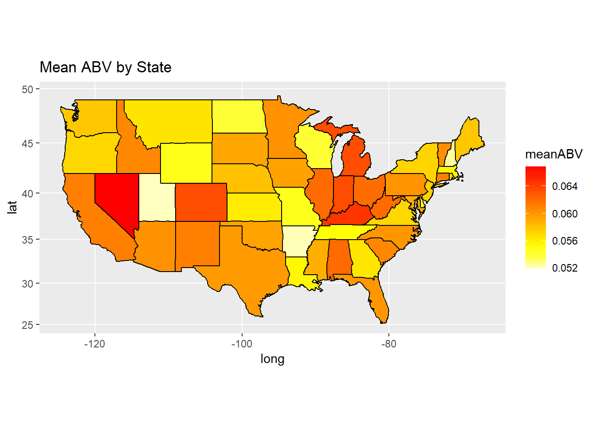
# ------
# below is the code for creating the Other Ales heat map
# ----
ggplot(map.df, aes(x=long,y=lat,group=group))+
geom_polygon(aes(fill=meanIBU))+
geom_path()+
scale_fill_gradientn(colours=rev(heat.colors(10)),na.value="grey90")+ggtitle(" Mean IBU by State")+
coord_map()## Warning: Removed 2 row(s) containing missing values (geom_path).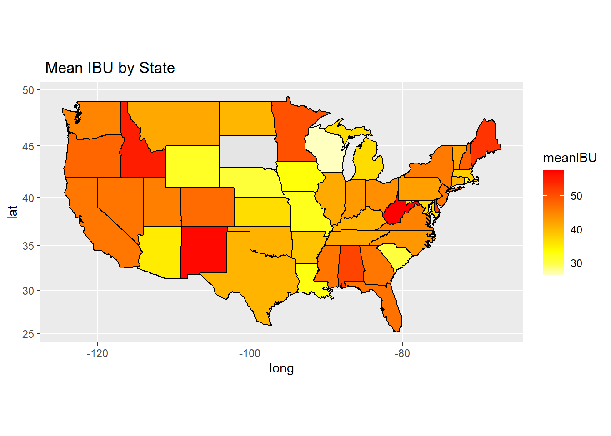
#---
# below is the code for creating the Beer Count heat map
# ----
ggplot(map.df, aes(x=long,y=lat,group=group))+
geom_polygon(aes(fill=cnt))+
geom_path()+
scale_fill_gradientn(colours=rev(heat.colors(10)),na.value="grey90")+ggtitle("Beer Count by State")+
coord_map()## Warning: Removed 2 row(s) containing missing values (geom_path).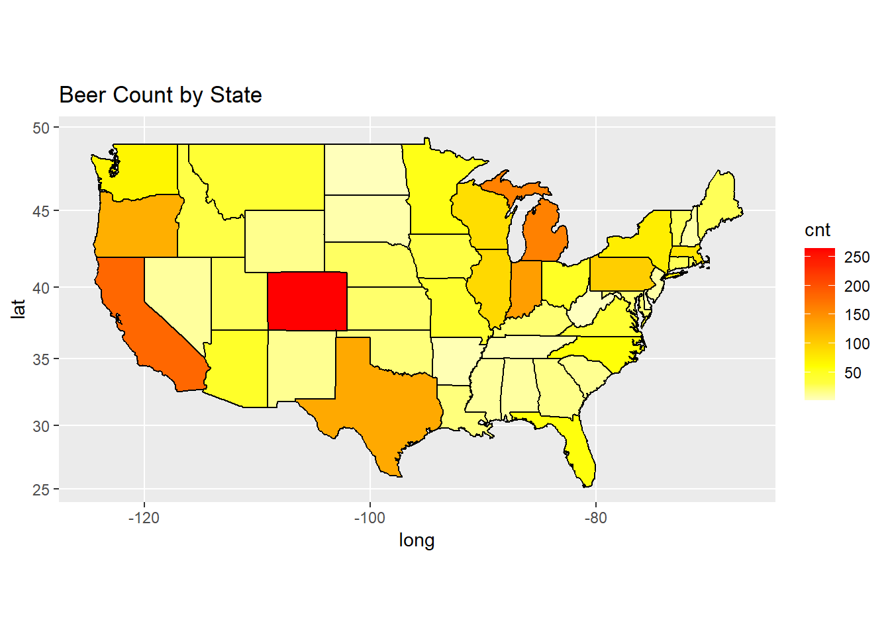
#
# below is the code for creating the Beer Count heat map
# ----
ggplot(map.df, aes(x=long,y=lat,group=group))+
geom_polygon(aes(fill=perCapita))+
geom_path()+
scale_fill_gradientn(colours=rev(heat.colors(10)),na.value="grey90")+ggtitle("Per Capita by State")+
coord_map()## Warning: Removed 2 row(s) containing missing values (geom_path).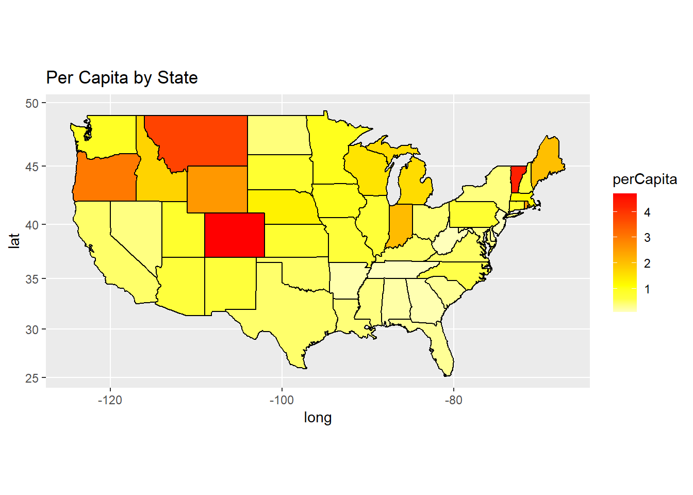
#
6.Comment on the summary statistics and distribution of the ABV variable.
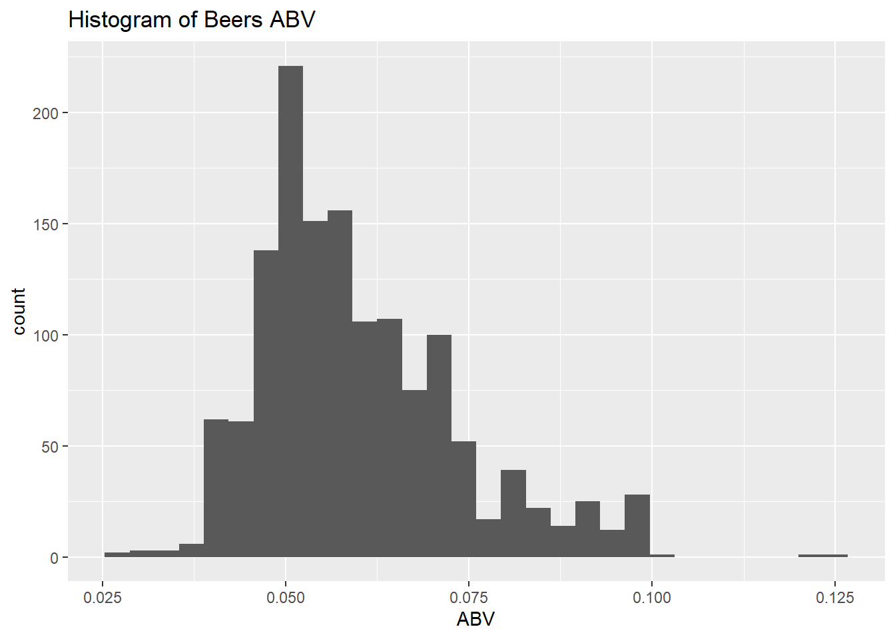
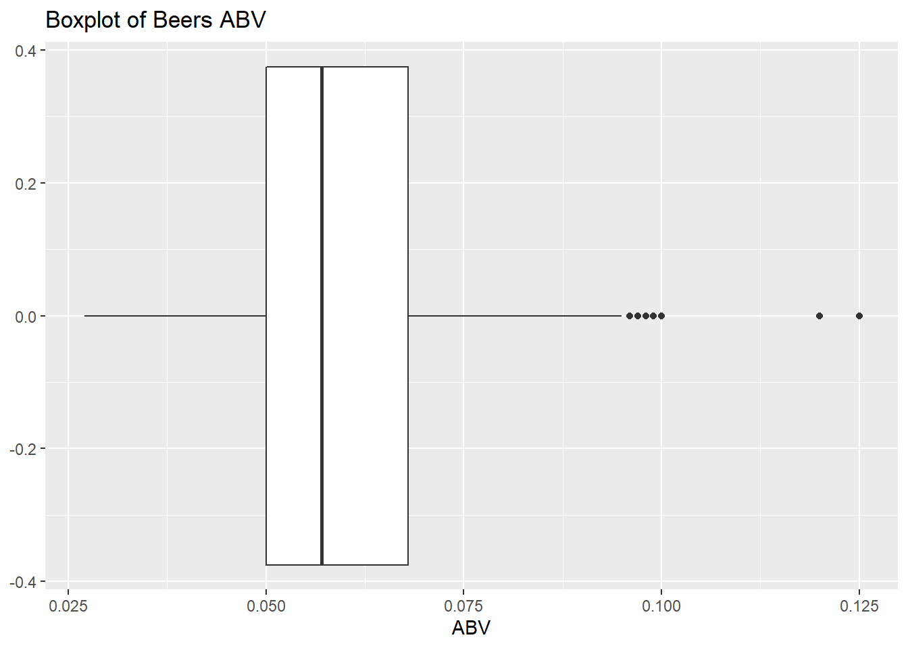